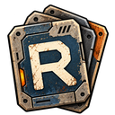
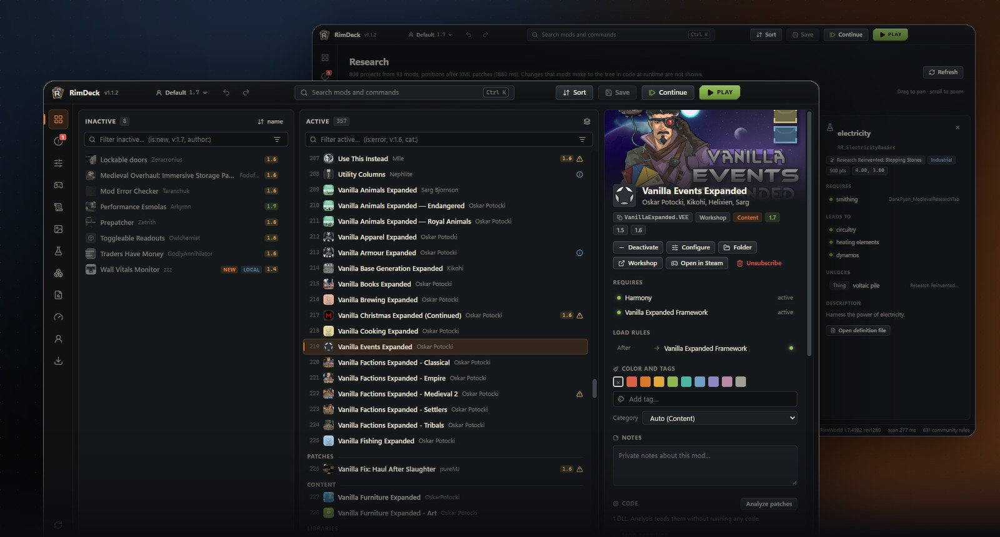
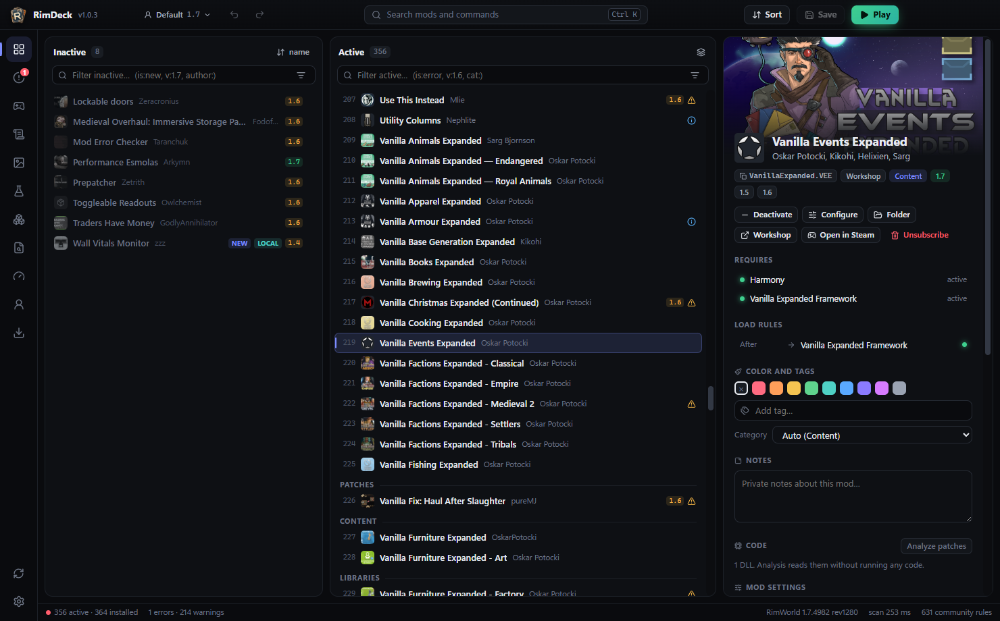
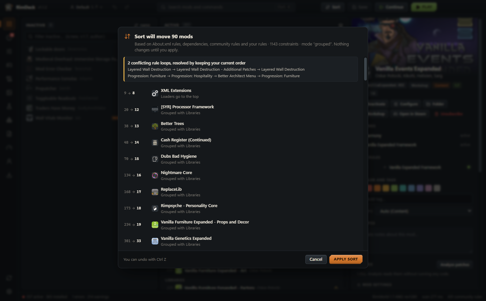
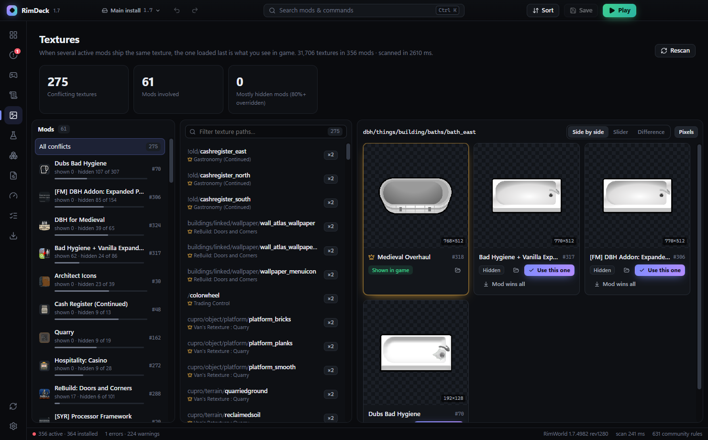
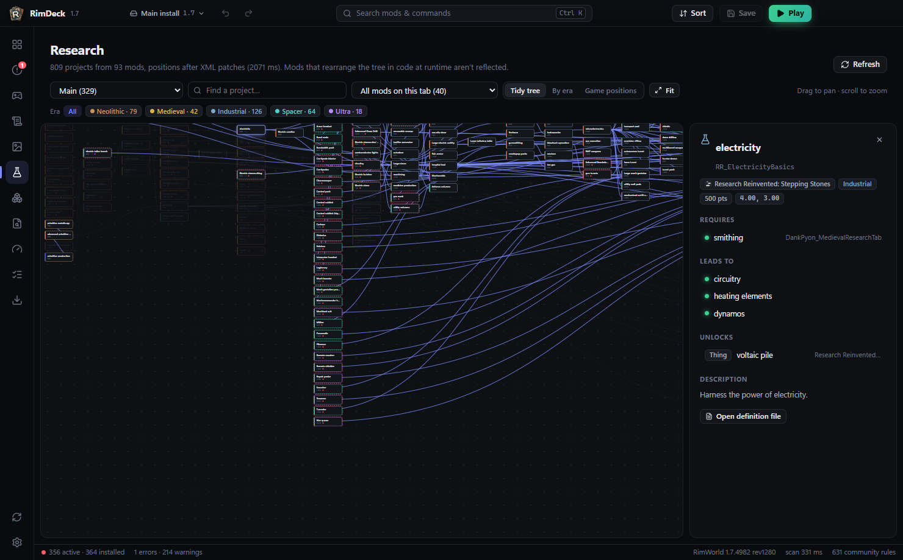
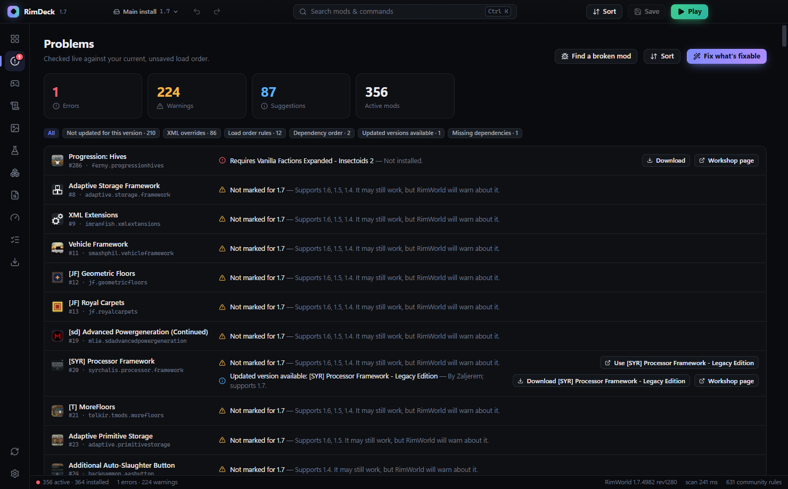
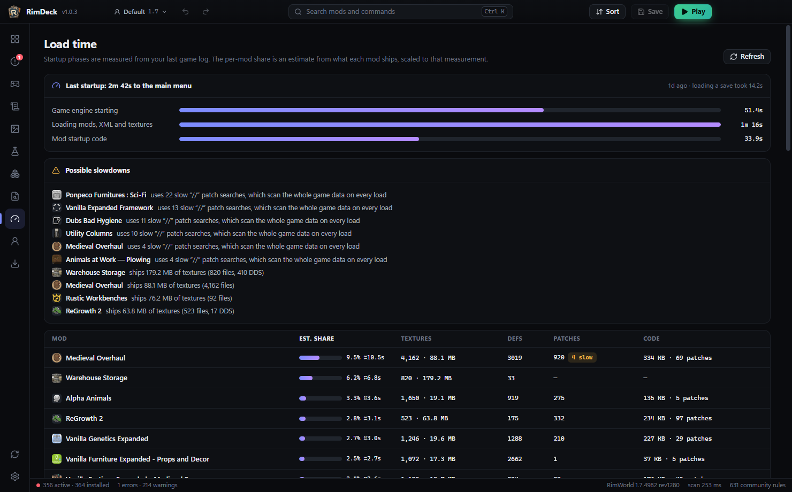

RimDeckRimDeck is a fast load order manager for RimWorld 1.4 to 1.7. It scans hundreds of mods in a blink, tells you exactly why each mod goes where it goes, finds problems before the game does, and starts you straight back into your colony.

About.xml rules, dependencies, RimSort's community rules and rules inferred from XML patches, with the reason for every move. Nothing changes until you apply it.
Missing dependencies, broken load order rules, incompatibilities, duplicates and outdated mods with updated replacements, live as you edit.
One click saves your load order, starts RimWorld and opens your latest save as soon as the game has loaded.
Edit any mod's settings with the labels, sliders and defaults from its own settings window, even ones you never changed.
See which mod's texture wins, compare side by side or as a pixel diff (DDS too), and pick single textures.
Every mod's research on one zoomable tree, sorted by era if you like, and items that exist more than once.
Errors grouped and pinned to the mods most likely responsible, plus a binary search that finds a broken mod in a few launches.
Download mods and whole collections through SteamCMD with update checks, and keep separate profiles per game version.
RimDeck writes only ModsConfig.xml and the settings you edit, and backs them up first. Mod code is read, never run.





